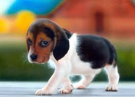
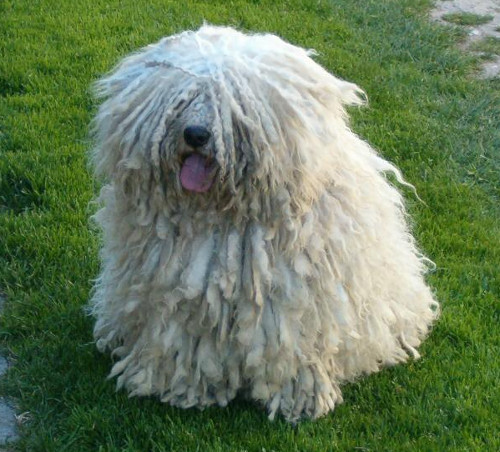

A kutyák

A kutyák munkatársként vagy munkaeszközként (például: õrkutyák, vadászkutyák, szánhúzókutyák, vakvezetõkutyák), terápiás
állatként, házi kedvencként egyaránt szolgálják az embereket.
A kutya a farkas egy mára már kihalt alfajának háziasításával jött létre.
A világon mintegy 430 kutyafajtát tartanak nyilván, és a mai napig folyik új fajták kitenyésztése.
A kutyáknál megkülönböztetik a két vagy több fajta keresztezõdésébõl származó a keverékeket és a fajtatiszta egyedeket. Utóbbiakat törzskönyvi nyilvántartásba veszik.
Jellemzők
Szaglás
A kutyák egyik legfigyelemreméltóbb sajátsága a szaglásuk. Minden kutya ösztönösen szagmintát vesz, amirõl csak lehet, legyen az ember, egy másik kutya, vagy akár egy hely. A kutyák orra töméntelen információt képes felfogni, szaglóhámja negyvenszer nagyobb, és körülbelül milliószor érzékenyebb az emberénél.
Látás
Sötétben a kutya jobban lát az embernél, ugyanakkor színlátása igen gyenge. A mozgásra már igen messzirõl felfigyelnek. Az álló, mozdulatlan tárgyakat viszont nem érzékelik jól.
Hallás
A fül a kutyák egyik legkifinomultabb érzékszerve. Minden kutyafaj kitûnõen hall. Hallástartományuk 40 Hz - 60 000 Hz.
Élettartam
A kutya várható élettartama fajtafüggõ. A legtöbb fajtánál az átlag életkor 10 és 13 év közötti.
Viselkedés
A kutyák képesek tanulni, alkalmazkodni a környezethez. A kutya falkában élõ állat, és mint ilyen, könnyen megérti a környezetében az emberek (és állatok) közötti társadalmi kapcsolatot, hierarchiát. Az együttélés során megfigyeli a gazdáját, és szinte olvas a gondolataiban, apró viselkedési jelekbõl igen pontosan meg tudja becsülni a gazda terveit, illetve, ha megoldhatatlannak tûnõ feladattal szembesül képes gazdája segítségét kérni.
Kilenc önálló õshonos magyar kutyafajtát tartanak nyilván:
- puli

- pumi
- mudi
- kuvasz
- komondor
- rövidszõrû- és
- drótszõrû magyar vizsla
- magyar agár
- erdélyi kopó


Piller Ferenc Tamás